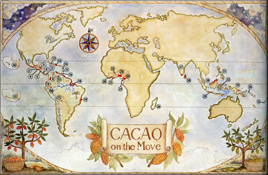
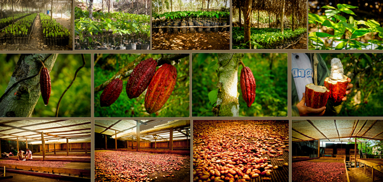
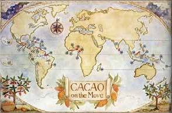

Historia del cacao
Los Aztecas creían que el Dios Quetzacoatl, serpiente emplumada y jardinero del paraiso trajo del cielo las semillas de cacao y enseñó como cultivar el árbol. Las culturas Mesoamericanas antiguas usaban el cacao como moneda y bebida ritual. El cacao, tan valioso como el oro y las gemas fue representado en las pinturas Aztecas siendo presentado como tributo al emperador y ofrendado a los muertos. En los últimos años se ha venido dando el boom del cacao en el Perú.Y no es difícil imaginar que el Perú tiene muchas ventajas con respecto a otros países, somos el segundo productor orgánico a nivel mundial, tenemos el 70% de la variedad existente en nuestro planeta, ya ha sido declarado como patrimonio natural de la nación y nuestro crecimiento es del 600% comparado con el año 2006. El día del cacao y chocolate es el 1ro de octubre. Y es que el cacao no solo es chocolate….es mucho mas…
- 
- 
Alimento de los Dioses
La materia prima que utilizamos proviene de nuestra finca de Cacao en Pucallpa, Ucayali,donde es tratada orgánicamente desde la semilla y con rigurosa CALIDAD en la cosecha,certificando nuestros cultivos de Cacao al 100% libre de químicos
Del Cacao al Chocolate
La pasta de cacao es resultado de prensar las semillas de cacao; de ella se desprenden los siguientes elementos beneficiosos para nuestro organismo: Serotonina: regulador del sueño, neurotransmisor anti-estrés y anti-depresivo TheoBromina: vigorizante y tonificante del organismo Feniletilamina: relacionado con el amor, se le conoce como el "químico del amor" Anandamida: neurotransmisor de sensaciones positivas Triptófano: aminoácido esencial que se convierte en serotonina y melatonina Hierro, Zinc, Manganeso, Cobre, y Magnesio. Propiedades Refuerza el sistema cardíaco Reduce la presión arterial e impide que la sangre se coagule Relaja el sistema nervioso y los músculos Favorece el sueño Ayuda a regular el azúcar en la sangre Previene el envejecimiento prematuro
- 